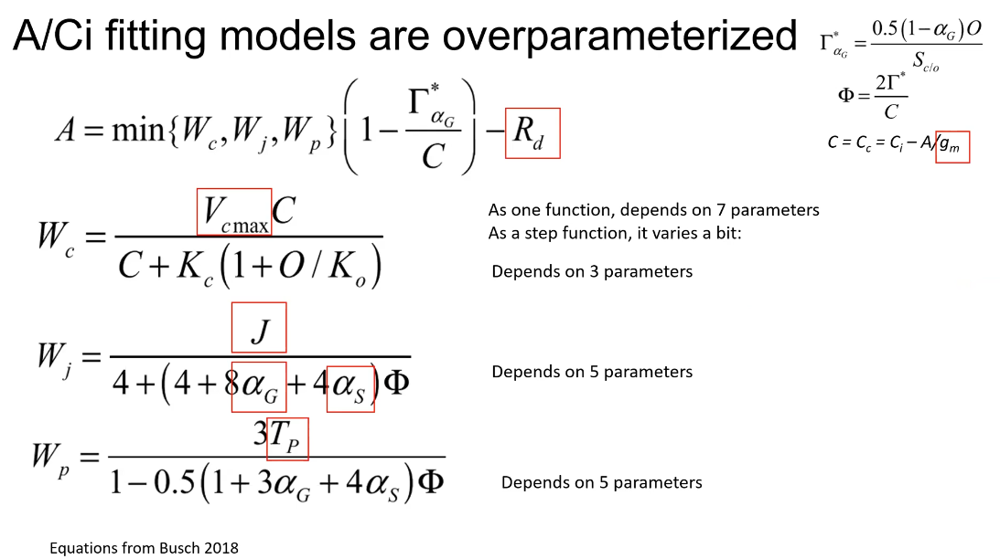

二氧化碳响应曲线概述
Farquhar, Caemmerer, 和 Berry (1980) 建立的 C3 植物模型 FvCB，一直是多数文章所选择的模型，其基于 C3 植物碳反应的三个阶段：
核酮糖-1,5-双磷酸羧化酶/加氧酶 (Rubisco)的催化下, 核酮糖-1,5-双磷酸(RuBP)与 CO2发生羧化作用, 生成3-磷酸甘油酸(PGA)。
在腺苷三磷酸(ATP)和还原型烟酰胺腺嘌呤 二核苷酸磷酸(NADPH)的作用下, PGA被还原成磷 酸丙糖(TP)。每6个TP中有1个输出到细胞液中, 用 于蔗糖或者淀粉的合成。
剩下的5个TP 在ATP的作用下再生为 3 个RuBP。一部分再生的 RuBP在Rubisco的催化下被氧化成PGA和2-磷酸乙 醇酸, 2-磷酸乙醇酸在ATP的作用下形成PGA, 并且 释放CO2 (光呼吸)。
在光照下, C3 植物净光合速率 (A) 取决于 3 个同时存在的速率: RuBP羧化速率(Vc)、RuBP氧化速率 (或光呼吸速率, Vo)和线粒体在光照下的呼吸速率 (或明呼吸速率, Rd; 此名为了与暗呼吸速率对应和区分)。RuBP氧化过程中每结合1 mol O2 就会释放 0.5 mol CO2 。因此, 净光合速率 A 的计算为：
A = V_c - 0.5V_{o} - R_{d} \tag{1}
线粒体Rd不同于暗呼吸速率(Rn )。Rn是叶片在 黑暗中的线粒体呼吸速率, 随着光照的增加, 线粒体呼吸速率下降。因此 Rd < Rn 在黑暗条件下测定的叶 片 CO2 交换速率即 Rn , 但是 Rd 的测定比较困难, 因为光照条件下 Rd 与 Vc、Vo 同时存在。Hikosaka 等 (2006) 总结了几种测定 Rd 的方法，式 公式 1 又可表达为：
A =V_{c} (1 -0.5 \alpha)\ R_{d} \tag{2}
式 公式 2 中 \alpha 为氧化速率和羧化速率的比值，由 Rubisco 动力学常数确定：
\alpha =\frac{V_{O}}{V_{C}} = \frac{O}{C_c} \times \frac{V_{omax} K_c}{V_{cmax}K_{o}} = \frac{O}{C_{c}} \times \frac{1}{S_{\frac{c}{o}}} \tag{3}
式 公式 3 中，Cc 和 O 分别为叶绿体部位 CO2 和 O2 浓度。Cc 和 O 通常以气体摩尔分数 (\mu mol \cdot mol^{-1} ) 或分压 (Pa) 表示, 但光合过程是在叶绿体的液相基质中发生的, 用分压表示更加恰当。Kc 与 Ko 为 Rubisco 羧化(氧化)的米氏常数, 代表了羧化(氧化)速率达到最大羧化(氧化)速率一半时的 CO2 和 O_{2} 浓度。是 Rubisco 特异性因子, S_{\frac{c}{o}}表示 Rubisco 对CO2 和 O_{2} 的偏好程度。
当 A = Rd , 即 RuBP 羧化的 CO2 吸收速率刚好 等于 RuBP 氧化的 CO2 释放速率 (Vc = 2Vo，羧化时 CO2 提供的为 CO ) 时, \alpha = 0.5。此时叶绿体的 CO2 浓度就是叶绿体 CO2 光合补偿点, 标记为 \Gamma^{*}。即：
\Gamma^{*}\ =\ \frac{0.5O}{S_{\frac{c}{o}}} \tag{4}
\alpha =\frac{2\Gamma^{*}}{C_{c}} \tag{5}
代入公式 公式 2 得到：
A\ =V_{c}\ (1\ -\frac{\Gamma^{*}}{C_{c}})\ R_{d} \tag{6}
在 Cc 浓度很低的时候，RuBP 供应充足 (Figure 1) Rubisco 阶段)，Vc 等于 Rubisco 所能支持的羧化速率 wc，：
w_{c}\ =\ \frac{V_{cmax\ }C_{c}}{C_{c\ }+\ K_{c\ }(1\ +\ \frac{O}{K_{o}})} \tag{7}
随着 Cc 浓度的增加，Rubisco 支持的羧化速率超过了 RuBP 供应速率, Vc 受 RuBP 再生速率的限制（Figure 1 RuBP 阶段），此时 Vc 由 RuBP 的再生速率限制，而 RuBP 又由电子传递速率（J）决定，故：
w_{j}\ =\ \frac{J\ C_{c}}{4C_{c\ }+\ 8\Gamma^{*}} \tag{8}
当 Cc 浓度很高，光合磷酸化超过了淀粉和蔗糖的合成速率的时候，Vc 受到 TP 利用速率（Vp）的限制（图 Figure 1 TPU 阶段），一般情况下，
w_{p\ }=\ \frac{3V_{p}C_{c}}{C_{c}-\Gamma^{*}} \tag{9}
最终，C3 植物叶片的光合速率 A 由 wc、wj、wp 的最小者决定（图 Figure 1 实现部分），当c > \Gamma^{*}时：
A=min\{w_{c},w_{j,}w_{p}\}(1-\frac{\Gamma^{*}}{C_{c}})-R_{d} \tag{10}
CO2 响应曲线测量的注意事项
尽管上文对其分段性做了数学上的解释，相比来讲，不是那么通俗易懂，根据 Haworth, Marino, 和 Centritto (2018) 文章中的内容，我们后面两小节的内容对其进行概述：
分段性
与光响应曲线不同， A/Ci 曲线是分段的，这也增加了其复杂性，在其最初阶段，CO_2 浓度较低，在此阶段， Rubisco 更多的与 O_2 结合，因此，即使是较小浓度的 CO_2 的增加，也会显著提高羧化速率，我们将此阶段称之为 CO_2 (Wullschleger (1993)) 限制或 Rubisco 限制 (Long 和 Bernacchi (2003))。净光合速率 A 与 Ci 在此阶段斜率比较陡峭，实践中往往利用计算该斜率来计算 V_{cmax}。
在较高的 CO_2 浓度下，曲线斜率开始便的平缓，作为底物的 CO_2 已经不在是限制因素，随着羧化速率达到最大，RUBP 的量成为了其限制因素，而 RUBP 的再生速率受最大电子传递速率 J_{max} 的限制。此时曲线的弯曲点由 V_{cmax} 限制转变为 J_{max}，许多研究中将饱和光下和 CO_2 浓度下测量的光合速率称之为做大光合速率(Heath 等 (2005))。而另一些研究中将最大光合速率定义为外界 CO_2 时，在饱和光强下达到的最大光合速率(Marshall 和 Biscoe (1980))。这些术语上的差别需要注意。
在之后，有可能继续观测到磷酸盐限制 RUBP 再生的情况，导致光合速率的下降。因为此时大量的磷酸丙糖与正磷酸盐结合，导致 ATP 合成受限制(Ellsworth 等 (2015))。这就是 TPU 限制阶段。
测量注意事项
尽管您的操作是严格按照说明书操作的，但说明书是指仪器的正确操作方式，无法对所有测量都采用相同设置，要获得好的测量结果，有更多的因素需要注意：
使用 LI-6400 或 LI-6800 测量 ACi 曲线的过程也就是控制叶室或参比室气体浓度变化的过程，只要诱导的时间足够，气孔会在相应设置的环境条件下开到足够大，这样 Ci 会随 Ca 而变化，一般来讲二者的比例为 0.7，但也可能在 0.5~ 0.7 间变化。
一般来讲，测量参数是在温度为 25 ^{\circ}C 时获得，但实际测量过程中，因为外界温度过高或过低等无法控制叶室温度到 25 ^{\circ}C，这其实并非严重的问题，因为这可以通过数学上的方法将计算参数标准化为 25 ^{\circ}C 时的结果。所以，在测量时只需控制叶室温度稳定即可（通常为 20 ^{\circ}C ~ 30 ^{\circ}C 之间）。 此外就是控制恒定的 VPD 及一个饱和光强。另外就是需要注意，开始测量之前，必须在外界环境的 CO_2 浓度下诱导足够长的时间，使光合速率达到稳定，一般需要20 ~ 30 min。对于没有稳定的光保护机制的植物，一般不建议在 50 ppm 或更低的浓度下进行设置，此时饱和光强和建议的温度下，植物没有足够的底物进行光合作用，这样会因为光化学反应的降低发生氧化性损伤。Centritto, Loreto, 和 Chartzoulakis (2003) 研究表明，长时间的在 50 ppm 下诱导气孔打开到最大时，可以观测到最大的气孔导度（非标准方式测量）。
对于存在干旱胁迫的测量，由于干旱会导致气孔关闭（Lauteri 等 (2014)）, 此时没有足够多的 CO_2 进入气孔，此时的测量是没有意义的，可在 50 ppm 诱导 1 h 等待气孔完全打开再快速升高 Ca 的值来进行测量（Centritto, Loreto, 和 Chartzoulakis (2003)）。该方法对于 V_{cmax} 不受影响而 J_{max} 降低的情况适用（Aganchich 等 (2009)）。但在某些情况下，气孔关闭速度太快，无法完成整个 A/Ci 曲线过程 (Haworth2017)（需要考虑 LI-6800 RACiR）。更重要的是，如果想采用拟合方式求 gm，那么气孔必须完全打开使叶片对 CO_2 吸收的限制降到最低。对于灌溉情况良好的植物或者土壤水分情况比较好的植物，气孔不对高于外界浓度的 Ca 的升高而响应(Haworth 等 (2015))，这可能需要更多的测量点或延长测量点的时间间隔来提高曲线的分辨率。另外，测量点的数量也要根据研究而改变，例如重点测量 Vcamx 时，50 ~ 300 ppm 的数据点要多一些，而如果研究对象是土壤磷酸盐对植物生理的限制，那么 1600 ~ 2000 ppm 的数据点要适当增多。
一个更精确的了解植物生理指标的方法是将 A/Ci 曲线改为 A/Cc 曲线，但这需要了解 gm 数据。因为 Cc 通过如下方式计算：
C_c = C_i - \frac{A}{gm} \tag{11}
对于 gm 的计算，比较易操作的有几种：采用光合荧光联合测量的方式计算求得。当然也可以采用曲线拟合的方式，或者 Yin 等 (2009) 使用的方式，在低氧气体下，采用不同的光照水平求得。这部分内容我们会在 23 叶肉导度计算 中讨论。
此外，测量气体交换时一个比较大的误差来源就是气体的扩散，因为测量时，多数时间内外界气体浓度要高于叶室内的气体浓度，那么即使用密封性非常好的材料，由外界高 CO_2 浓度气体向叶室低 CO_2 浓度气体的扩散无法避免，尤其是在连续长时间测量时该效应尤为明显，因此需要经常更换叶室垫圈。还可以通过一些方法来校正（Flexas J 和 A (2007)，rodeghiero2007major），但如果采用 LI-6800 测量这将不是问题，首先它使用的材料耐用性比较高，而其叶室增压技术能够很好的解决这方面的问题。
ACi VS RACiR
在评估作物性状时，V_{cmax} 及 J_{max}时非常有用，传统的 A–Ci 曲线测量要求植物叶片要在一定浓度 CO_{2} 下适应几分钟后完成测量，这样的测量有几个缺点：
- 测量时间长，一条曲线至少需要 20 – 30 min，样本量多，重复多时，这种方法几乎没有可行性。
- 整个测量过程中，时间长，酶的激活状态会有变化，叶绿体会移动，气孔的开度也会发生变化。
而 LI-6800 独有的 auto control 功能在算法上允许用户自定义 CO_{2} 的起始浓度和种植浓度、变化方式（线性或其他）、所花费的时间，再加上其 IRGAs 极快的响应频率，使得短时间内的 A–Ci 的测量成为现实，即快速 CO_{2} 响应曲线 RACiR 测量实验 (J. R. Stinziano 等 2017)，该功能使得 5 min 内测量 A–Ci 曲线成为可能。该方法的实现可参考 J. R. Stinziano 等 (2017) 的文章。
Joseph R. Stinziano 等 (2018) 针对 RACiR技术的疑问做了解答并提出了准确测量的建议，概括如下：
- 首先，采用 100 ppm/min 的变化速率是与标准方法重合度最高的测量。
- 其次，明确研究问题，目前已有研究表明Vcmax 与 Jmax 的计算结果与标准测量方法结果无显著差异。
- 任何条件的改变，都需要做空叶室校准，例如：流速，气体浓度变化方向、温度，斜率等。
- 空叶室校准与叶片测量采用严格的同一次校准，因为 IRGA 的漂移，需要再次匹配时，或者环境条件改变时，需要重新做空叶室校准。是否需要匹配，可通过不加叶片的最初状态查看，此时 A 值应接近为0，reference 和 sample 气体浓度读数接近相等。
- IRGA 分析器使用 5 此多项式进行校准，推荐使用 1 次到 5 次多项式进行拟合，然后根据 BIC 指数来确定最合适的空叶室校准系数（即非参数拟合的模型选择的问题）。 确定最合适的浓度变化范围。通常需要去掉最初和最后 30 s的数据。
- 最小化校准和测量值之间的水分摩尔分数差异。甚至有可能需要控制 reference 或 sample 的水的摩尔分数而不是 Vpdleaf。 通过预实验来确定最合适的 CO_2 变化范围和随时间的斜率。
而 Coursolle 等 (2019) 测量了簇状叶黑云杉和香脂冷杉两种簇状叶植物的 RACiR，实验方法在 J. R. Stinziano 等 (2017) 的基础上做了轻微的改进，其方法和结论值得在测量时借鉴，测量方法上：
簇状叶室体积远大于荧光叶室和其他叶室，使用的 CO_2 的变化为： 15 min 内从 20 ppm 到 1520 ppm 的变化，即变化的速率为 100 ppm \cdot min^{-1}。但也测试了 200 - 800 ppm的部分曲线。
拟合使用了测量的 Rd，测量方法为：控制 reference 气路在 420 ppm 的 CO_2 和 22 mmol \cdot mol^{-1} 的 H2O 浓度，控制温度为 25 C，诱导后测量 Rd。
得到了一些有帮助的结论：
使用更大的叶室测量 RACiR 是可行的（36 cm^2），叶室环境的控制需要通过预实验来确定。
该实验使用的 ACi 曲线测量时间在 30 到 36 min，而 RACiR 使用的完整的二氧化碳的浓度范围时，曲线耗时最大的时间接近 22 min。但使用 200 - 800 ppm 范围的变化，则时间可以下降 50%，这些部分范围的测量则可以应用于植物胁迫和表型平台的研究。
实验结果证明只要 match 的调整值保持不变即无需进行空叶室校准（也就是无需匹配的意思，实际的时间间隔取决于仪器的状态），但最新的 range match 功能可有效的增加空叶室校准的时间间隔（新功能，作者试验时尚未推出该功能）。
作者建议最好测量暗呼吸的速率，以获得最佳的 Vcmax 和 Jmax 计算结果。如果有第二台光合仪来测量则可有效的缩短测量时间。
RACiR 方法在测量方式上是一种动态的方法，而传统 ACi 曲线则是一种静态的测量方式，但植物叶片在 2 s 内能够对外界 CO2 的变化做出响应，并能达到准稳态状态，这使得该方法测量时有理论依据的 (J. R. Stinziano 等 2017)，而且使用不同的 CO2 变化速率，有助于进一步了解植物光合的特性。Joseph R., Rachael K., 和 David T. (2019) 最新的研究给出一系列结论：
扩散限制（CO_2 总导度） 和光呼吸导致了表观上的标准 ACi 曲线和 RACiR 测量之间的偏差，表明他们的差异是由生物因子引起，而非仪器导致的人为误差。
上述原因导致的二者之间的偏差，如果不进行修正，那么将显著的低估 \Gamma^*, 除非使用多个速率的 RACiR 来修正。
较高速率的 RACiR 曲线会增大其与标准曲线之间的偏差，但这个差距在无光呼吸的条件下会减小。
因为光呼吸和气体扩散限制与物种相关，结合以上结论，可以使用多个速率的 RACiR 来估算对 CO_2 的总导度以及相对量的光呼吸速率。
一些可能的方向：
扩散限制影响 Cc 速率的变化，说明对具有较高总阻力与 CO_2 比值的物种，例如针叶物种，C4 植物，较高的阻力导致 RACiR 与 标准 ACi 测量斜率更大的差异，或者测量的前提假设被破坏。
RACiR 可检测到代谢中 CO_2 的滞后性，各种滞后性的检测对标准 ACi 测量也具有指示性。
由此来看，RACiR 测量具有进一步深入研究的意义。
使用 DAT 做快速 ACi
RACiR 测量相比普通测量来讲，需要进行叶室修正，在大批量测量的情况下，无疑会使得后期数据处理比较繁琐。Saathoff 和 Welles (2021) 根据 LI-6800 的新特性，开创性的使用 DAT（dynamic assimilation technique）技术来进行测量。使得光合测量进入了动态测量的新时代，而在 LI-6800 系统 BLUE \ge 1.5.02 版本之后，因为快速变化导致两个分析器浓度响应速度不同的问题在仪器内部可以直接修正，无需再测量结束后进行额外的校准。这使得快速 ACi 的 测量更加容易和方便。
需要指出的是 Joseph R. Stinziano 等 (2018) 的修正是建议采用多项式拟合因分析器响应速度的差异导致的误差，而 DAT 则是从根本上解决该问题，简单来讲，DAT 是基于叶室物质平衡计算的光合速率，与稳态测量计算采取的策略一致。考虑了参比气路和样品气路体积差异，时间差异的基础上，通过与时间相关的斜率来修正动态数据，但二者目的均为修正在变化的 CO2 浓度下两个分析器响应时间不一致的问题，在使用 RACiR 建议的 100 ppm 变化率时，二者接近完美的重合 Figure 2：
而且在 LI-6800 BP 界面直接有相关自动测量程序供使用，可以通过设置完相关参数后，一键自动运行来完成测量。这也是我们目前建议测量快速 ACi 曲线的方式。
关于 DAT 或 RACiR 来应对过参数化的问题
Alan McClain 关于 DAT 来帮助 ACi 曲线拟合过参数化 1 有一个讨论，我们可以看一下。首先 FvCB 模型是一个过参数化的方程，这是毋庸置疑的：
 一个典型的 ACi 曲线数据点一般不会超过 16 个（不是不能超过，是测量时间太久），而即使使用整体拟合，也要有 7 个拟合参数，至于分段拟合的话，甚至有可能只有 3 个数据点来拟合的情况发生，这在数学上无疑是典型的过参数化。而数据点比较少也是导致不同拟合方式结果差异较大的原因之一：
而 DAT 或 RACiR 数据量一般都在几百个，这样不管是整体拟合还是分段拟合，相比拟合的参数来讲，拟合数据点的量足够大，在很大程度上能够避免过参数化带来的影响。